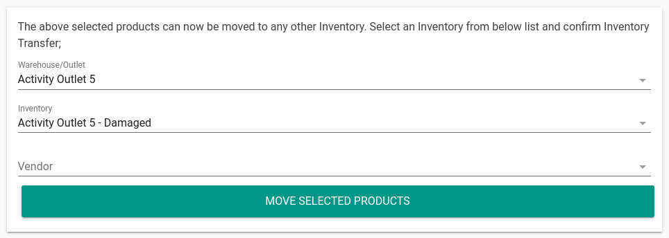

<link rel="import" href="../bower_components/polymer/polymer-element.html">
<link rel="import" href="../bower_components/paper-button/paper-button.html">
<link rel="import" href="../bower_components/paper-tabs/paper-tabs.html">
<link rel="import" href="../bower_components/paper-tabs/paper-tab.html">

<link rel="import" href="../bower_components/baselib/baselib.html">

<link rel="import" href="../bower_components/polymer-fx/fx-page.html">
<link rel="import" href="../bower_components/polymer-fx/fx-common-behavior.html">

<link rel="import" href="torque-common-behavior.html">
<link rel="import" href="torque-page-behavior.html">
<link rel="import" href="torque-language-behavior.html">

<link rel="import" href="shared-styles.html">

<dom-module id="page-help">
  <template>

    <style include="shared-styles">
      :host {
        font-size: 16px;
      }

      p {}

      ul,
      ol {
        padding-left: 18px;
      }

      li {}

      h1,
      h2 {
        padding: 0px;
        margin: 0px;
        line-height: normal;
      }

      h1 {
        font-size: 18px;
        margin-top: 12px;
      }

      h2 {}

      a {
        color: var(--app-primary-color);
      }

      .block {}

      .question {
        cursor: pointer;
        font-size: 20px;
      }

      .answer {
        border-top: 1px solid rgb(165, 165, 165);
        /* margin-left: 28px; */
        /* padding-left: 4px; */
        padding-top: 2px;

        animation-name: example;
        animation-duration: 1s;
      }

      @keyframes example {
        from {
          opacity: 0;
        }

        to {
          opacity: 1;
        }
      }

      img {
        width: 100%;
      }

      /* This element defines the size the iframe will take.
   In this example we want to have a ratio of 25:14 */
      .aspect-ratio {
        position: relative;
        width: 100%;
        height: 0;
        padding-bottom: 56%;
        /* The height of the item will now be 56% of the width. */
      }

      /* Adjust the iframe so it's rendered in the outer-width and outer-height of it's parent */
      .aspect-ratio iframe {
        position: absolute;
        width: 100%;
        height: 100%;
        left: 0;
        top: 0;
      }
    </style>

    <elem-not-ready is-ready="[[isReady]]"></elem-not-ready>

    <div class$="page layout vertical [[$if(isReady, '', 'hidden')]]" id="wrapper">

      <div class="block card" data-topic="transfer">
        <div class="question" draggable="false" on-tap="questionTapped">
          <iron-icon icon="icons:chevron-right" class="collapsed-icon"></iron-icon>
          <iron-icon icon="icons:expand-more" class="expanded-icon hidden"></iron-icon>
          How to transfer products from one inventory to another inventory?
        </div>
        <div class="answer hidden">
          <h1>Between warehouses and outlets</h1>
          <p> Follow the steps below to transfer products from warehouse to an outlet:
            <ol>
              <li>Select "Warehouses" from side nav.</li>
              <li>Press the "View" button beside the warehouse you want to move products <b>from</b>.</li>
              <li>Press the "View" button beside the inventory you want to move products <b>from</b>.</li>
              <li>Scroll to bottom and tap on "Start selecting products to transfer".</li>
              <li>Select the desired products and write in how many units do you want to move</li>
              <li>Click <a href="#">Here to learn more</a></li>
            </ol>
            
          </p>
          <h1>Within the same warehouse/outlet</h1>
          <p> Follow the steps below to transfer products from warehouse to an outlet:
            <ol>
              <li>Select "Warehouses" from side nav.</li>
              <li>Press the "View" button beside the warehouse you want to move products <b>from</b>.</li>
              <li>Press the "View" button beside the inventory you want to move products <b>from</b>.</li>
              <li>Scroll to bottom and tap on "Start selecting products to transfer".</li>
              <li>Select the desired products and write in how many units do you want to move</li>
            </ol>
            <div class="aspect-ratio">
              <iframe src="https://www.youtube-nocookie.com/embed/8DGQ48PNQJE" frameborder="0" allow="accelerometer; autoplay; encrypted-media; gyroscope; picture-in-picture" allowfullscreen></iframe>
            </div>

          </p>
        </div>
      </div>

      <div class="block card" data-topic="add">
        <div class="question" draggable="false" on-tap="questionTapped">
          <iron-icon icon="icons:chevron-right" class="collapsed-icon"></iron-icon>
          <iron-icon icon="icons:expand-more" class="expanded-icon hidden"></iron-icon>
          How to add products to outlet/warehouse?
        </div>
        <div class="answer hidden">
          Yes
        </div>
      </div>

      <div class="block card" data-topic="add">
        <div class="question" draggable="false" on-tap="questionTapped">
          <iron-icon icon="icons:chevron-right" class="collapsed-icon"></iron-icon>
          <iron-icon icon="icons:expand-more" class="expanded-icon hidden"></iron-icon>
          How to add products to outlet/warehouse?
        </div>
        <div class="answer hidden">
          Yes<br> Yes<br> Yes<br> Yes<br> Yes<br> Yes<br> Yes<br>
        </div>
      </div>

      <div class="block card" data-topic="add">
        <div class="question" draggable="false" on-tap="questionTapped">
          <iron-icon icon="icons:chevron-right" class="collapsed-icon"></iron-icon>
          <iron-icon icon="icons:expand-more" class="expanded-icon hidden"></iron-icon>
          How to add products to outlet/warehouse?
        </div>
        <div class="answer hidden">
          Yes Yes<br> Yes<br> Yes<br> Yes<br> Yes<br> Yes<br> Yes<br> Yes<br>
        </div>
      </div>

    </div>

  </template>

  <script>
    class PageHelp extends FxPage.mixin(TorqueCommonBehavior, TorquePageBehavior, FxCommonBehavior, TorqueLanguageBehavior) {

      static get is() {
        return 'page-help';
      }

      static get properties() {
        return {

        };
      }

      // region: core =================================

      constructor() {
        super();
        this.confirmPageReady();
      }

      onNavigateIn() {
        this.app.shouldShowSaveButton = false;
        this.app.currentPageIsModal = false;
        this.useLanguageServices();
        this.app.pushPageTitle(this.app.verses.help.pageTitle);
        this.delay(300, () => {
          this.isReady = true;
          if ('topic' in this.params) {
            let parent = this.elem(`[data-topic=${this.params.topic}]`);
            if (parent) {
              this._showAnswerOfBlock(parent);
              parent.scrollIntoView();
            }
          }
        });
      }

      onNavigateOut() {
        super.onNavigateOut();
      }

      _hideAllAnswers({ exclude = null } = {}) {
        this.elemAll('.block').forEach(parent => {
          if (parent === exclude) return;
          let answer = parent.querySelector('.answer');
          answer.classList.add('hidden');
          parent.querySelector('.collapsed-icon').classList.remove('hidden');
          parent.querySelector('.expanded-icon').classList.add('hidden');
        })
      }

      _showAnswerOfBlock(parent) {
        let answer = parent.querySelector('.answer');
        answer.classList.toggle('hidden');
        parent.querySelector('.collapsed-icon').classList.toggle('hidden');
        parent.querySelector('.expanded-icon').classList.toggle('hidden');
      }

      questionTapped(e) {
        let parent = e.currentTarget.parentNode;
        this._hideAllAnswers({ exclude: parent });
        this._showAnswerOfBlock(parent);
      }

      // region: misc =================================      


    }

    window.customElements.define(PageHelp.is, PageHelp);
  </script>
</dom-module>